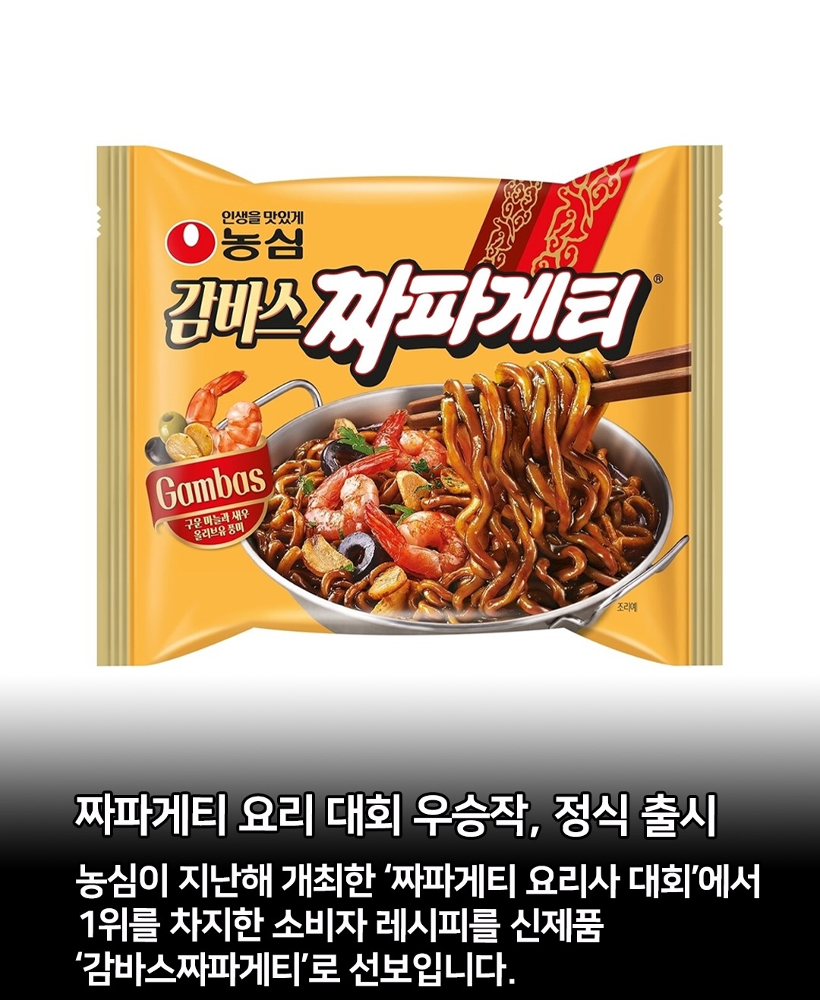
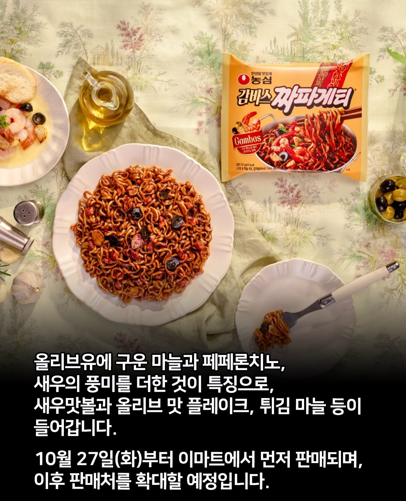

어허 그렇게 말하면 안되고 ㅋㅋ 마케팅해서 비싸게 팔아야되는데 ㅋㅋ
어허 감 바 스
감바스는.... 새우잖아요......
ㅇㅇ?
이거 제대로 간봤으~?
마라짜파 맛있었는데..
증정 들어와서 먹어봤는데 최악 중에 최악이었음
마라맛은 좆도 없는데 캡사이신처럼 맵기만 존나게 맵고
나도 어지간하면 다처먹는 누렁인데 얘는 묶음사서 남은거 다른 사람 줬음.. 매운건 모르겠는데 요상한 맛이라 힘들더라
한번 먹어보고싶네
저 신제품은 모르겠고
이거 레시피대로 해먹으니까 진짜 맛잇긴하더라
왜 1등했는지 바로 이해가는 맛이었음
오 그정도야?
감바스같은맛 원래 좋아하면 강추임
레시피 공유좀 부탁드려도 될까요??
유투브에 많음 감바스 만들다 익힌면 면수조금 스프넣으면 되던가
본문에도 있음
유튜브에 영상 검색 ㄱㄱ 해먹기 편한것도 한몫하는듯
감바스가 기름에 육수 쫙뽑아낸거라 해먹으면 기가막히지 나도 삼겹살하고 그 기름에 사천짜장 삼겹살먹다가 남은 파채 마늘 양파 볶고 거기다 해먹으면 존나맛있음 그냥 섹스임 ㅋㅋ
감스트짜파게티
궁금한데
건새우 후레이크 같은거 넣어서 주겠네
짜파게티 특유의 굵은 면발로 쫄깃한 식감을 살렸으며, 감바스의 핵심인 새우를 새우맛볼로 구현하고 올리브 맛 플레이크, 튀김 마늘을 별첨해 다채로운 맛과 식감을 더했다.
새우"맛"볼 ㅋㅋ 바로 불안함
사실상 새우맛 어묵엔딩 ㅋㅋ
어묵 수준이라도 될까? 난 의문임
본문
개비싸게 나올거 같은데
친구들끼리 모여서 한잔 할때마다 꼭 바지락 술찜 해먹고 바닥에 남은 육수에다가 짜파게티 삶아서 넣고 비벼먹는데 진짜 환상임
버터+조개육수인 셈이라 진짜 맛있다
다들 꼭 해봐라
진짜 유투브에 떠돌아다니는 수많은 레시피, 셰프 레시피 다 따라해봤지만 결국 순정이 최고더라..
얼마나 비쌀지 감도 안오는구만
감봤으
나도 해먹어 보니 존나 맛있긴 하더라 ㅋㅋㅋ
새우도 아니고 새우맛 볼이 가격을 얼마나 올릴지 기대되는걸

맛있겠다
감스트 짜파게티 어디감?
하고 싶은거 다 하고 제발 마라샹구리 부활좀..
새우탕으로 짜빠구리한거 이기기 가능?
정면 사진에는 새우로 보이는데 제품소개에는 '새우맛볼' ㅋㅋㅋㅋㅋㅋㅋㅋㅋㅋㅋ
맛있겠다
감바스는 새우야!
는 게시물 소환
감스트 어디감?
이것도 맛있는데
깔끔한거 땡길땐 오리지널 짜파게티에 청양고추만 넣어도 좋더라
요즘 짜장면 집보다 짜파게티다 맛남
그냥 삼선짜장 아님? ㅋㅋ